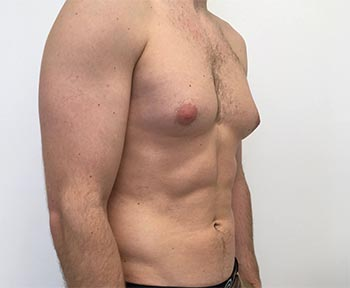

Enlarged Breasts In Men (Gynecomastia)
When it comes to beauty, men and women have different definitions of it. For women beauty is an attractive figure and lush complexion. For men, it is an ideal body (good height, well build up body, dark complexion and so forth), which Gynecomastia can really distort. This condition can lead to extreme stress and embarrassment for men.
What is Gynecomastia?
Gynecomastia is basically a condition in which men grow large breasts, also known as man boobs. This is a common disorder that men suffer from and is a great confidence killer for them. In this condition, men start to develop big breasts similar to females due to excessive estrogen in their body.
Most baby boys suffer from it, as estrogen levels are greater in them and is transferred from their mothers. As males age, this problem seems to settle as estrogen level lowers, but not all men are as lucky. Some men do not get better as they age and no matter how slim and trim they are, their breasts are larger than normal, which damages their personality a lot.
Diagnosis
Your physician asks you questions regarding your medical and drug background and what health issues run as part of your family. The physician may also start a bodily check-up that might contain a careful look at your breast tissue, abdomen, and genitals.
Initial tests to look for the trigger of the gynecomastia could be:
- Bloodstream tests
- Mammograms
You'll need more testing based on your original test results, such as:
- Computerized tomography or most known as CT scans
- MRI (Magnetic resonance imaging) scans
- Testicular ultrasounds
- Tissue biopsies
Problems that trigger related symptoms
Your physician will need to make sure the breast swelling is true gynecomastia instead of a different issue. Other concerns that produce identical symptoms include:
- Fatty breast tissue. Many males and youngsters have extra chest fat that looks like gynecomastia. This is known as false gynecomastia (pseudogynecomastia), and this is not identical to gynecomastia.
- Breast cancer. It's unusual in males, but they can happen. Enlargement of a single breast or even the existence of a firm nodule adds to the problem for male breast cancer.
- A breast abscess (mastitis). It is really a disease of the breast tissue.
Gynecomastia treatment options
There are many treatment options available for Gynecomastia, but 3 most common treatment options are:
- Taking compression vests: These are tight shirts than you can wear in order to hide Gynecomastia temporarily. Please note that this shirt may not be everyone’s piece of cake as it may be uncomfortableto wear. Broadly speaking, it’s like a bra that you can use to hide your boobs beneath, but not any solution to this problem. Also, you may feel pain in chest after using it for so long (due to severe compression).
- The supplements: These are more reliable solutions to Gynecomastia and provides long lasting and everlasting results. There are many supplements on the market, but please be careful because most of them are scams. At this time, there are 2 brands that are very popular and has proved effective in losing man boobs. Gynectrol for example, this male breast reduction pills made by Crazy Bulk and many men feel the benefits.
- The surgery: There is much hype about Gynecomastia surgery nowadays as many celebrities opt for it. However, it has its fair share of side effects that you can’t ignore. Yes, you have read it right. Gynecomastia surgery has tons of side effects, some of which are:
- The biggest side effect is the failure risk associated with it. Many people have reported to have grown back their breasts even after Gynecomastia surgery.
- Dark bruises and deep scarring is another very common side effect associated with Gynecomastia surgery. Also, it would take months for the pain in the breast area to subside, affectingthe quality of life.
- Abnormal symmetry of nipples is also a very common side effect seen in males after surgery, and this is because no surgery or artificial procedure can replace the natural shape and balance of your body.
- Males complain loss of nipple sensation and face nerve damage after the surgery.
- Gynecomastia surgery is not covered in insurance, and even the most affordable surgery can cost around $3k.
- Many men develop allergic and long-term reaction as a result of Gynecomastia surgery.
If you want to get rid of Gynecomastia, there are many natural solutions available. Read gynectrol review and try it! Do not risk your health on procedures such as Gynecomastia surgery and save yourself from painful and long term side effects.
Important Disclaimer: All the information given on NoGyno is only intended for informational and educational purposes. Any given information on this website have not been evaluated by FDA. Any product discussed on the website isn't intended to diagnose, treat or prevent any disease or illness. Kindly, consult your doctor or physician first before using any of the given supplement if you’re under any medication or changing your daily diet plan.